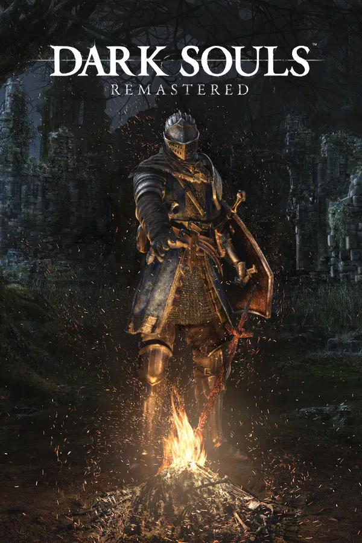

Dark Souls Remastered
Dark Souls Remastered é um RPG de ação aclamado, desenvolvido pela FromSoftware e publicado pela Bandai Namco Entertainment. Lançada em 2018, esta remasterização preserva a experiência sombria do clássico lançado originalmente em 2011, trazendo melhorias gráficas modernas, suporte nativo a 60 FPS, resolução aprimorada e estabilidade no modo online.
Conhecido mundialmente por sua dificuldade impiedosa mas justa, level design interconectado brilhante e uma narrativa fragmentada contada através do ambiente e itens, Dark Souls tornou-se um marco na história dos videogames, dando origem ao influente subgênero "Soulslike".
Nesta wiki, você terá acesso a fichas detalhadas de atributos, caminhos de aprimoramento e localização de itens vitais para a sua jornada por Lordran.

Explore a Wiki
Selecione uma das categorias abaixo para mergulhar nos detalhes técnicos e mecânicas de Dark Souls:
Armas
Fichas detalhadas de adagas, espadas, machados e catalisadores. Compare danos e escalonamentos.
Ver CategoriaArmaduras
Conjuntos completos de defesas físicas e elementais, equilíbrio e controle de peso.
Em breveChefes
Guias de combate, fraquezas elementais, quantidade de vida e recompensas de alma.
Em breveNPCs
Localização dos habitantes de Lordran, linhas de missões, mercadorias e histórias.
Em breveÁreas
Rotas recomendadas para exploração, conexões de mapa e atalhos essenciais.
Em brevePactos
Como entrar em cada facção, recompensas por níveis e mecânicas de multijogador.
Em breve